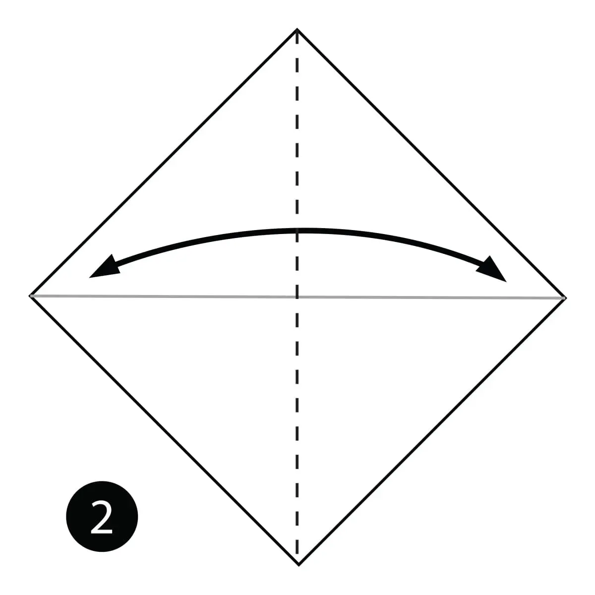
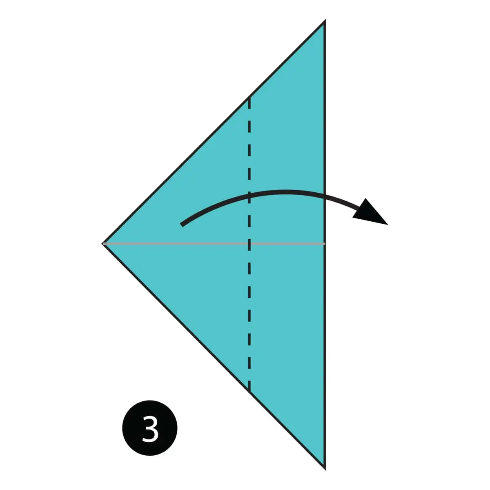
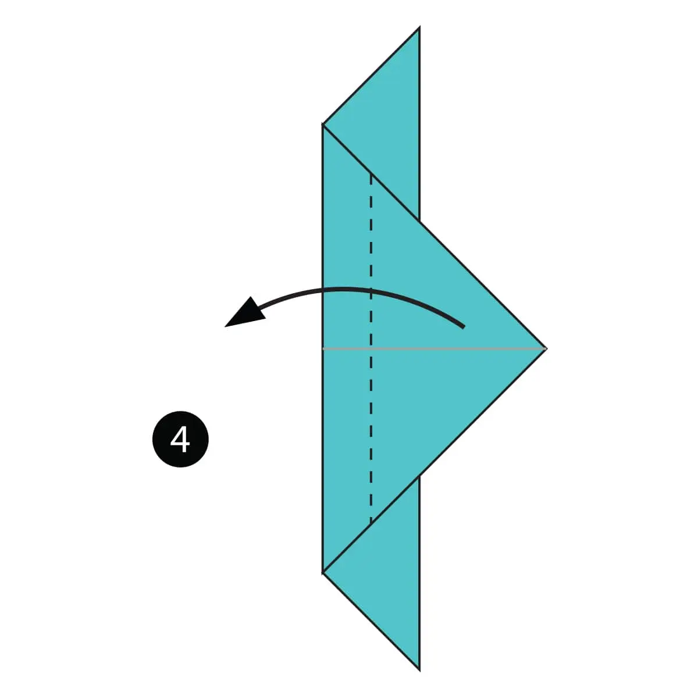
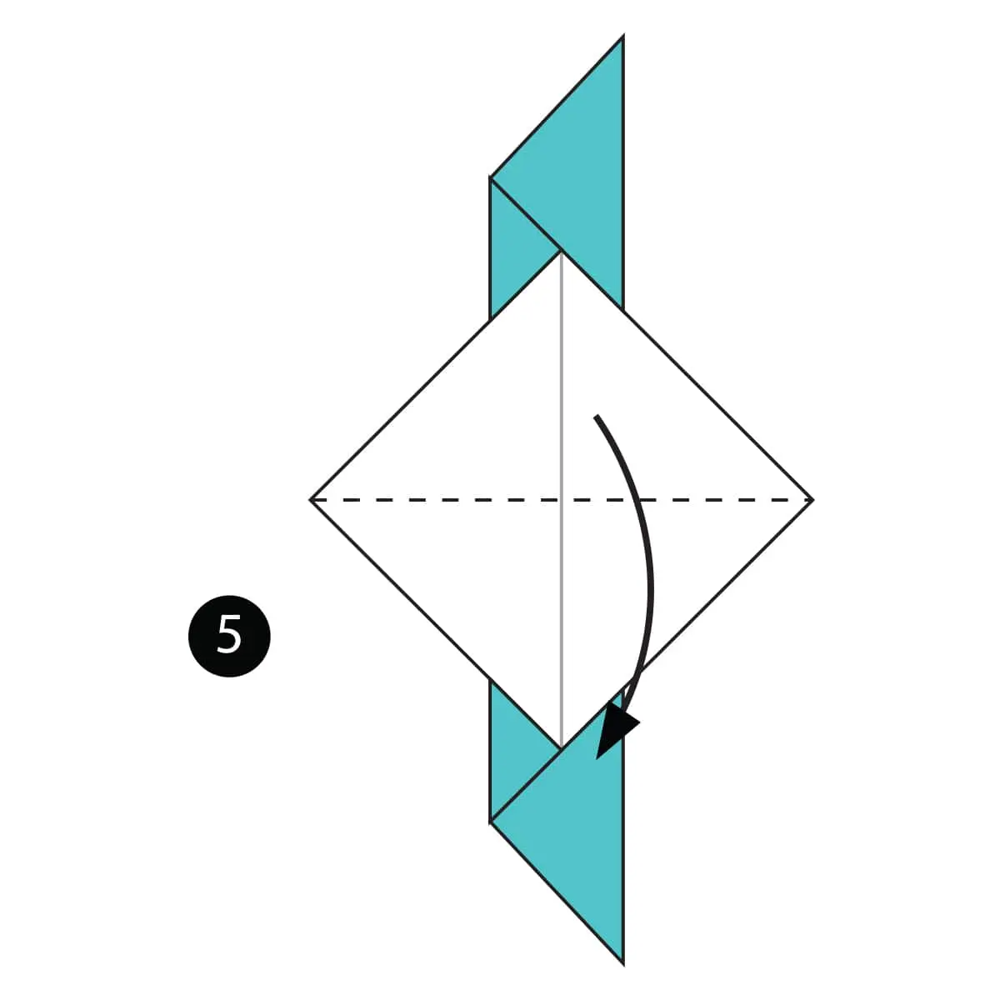
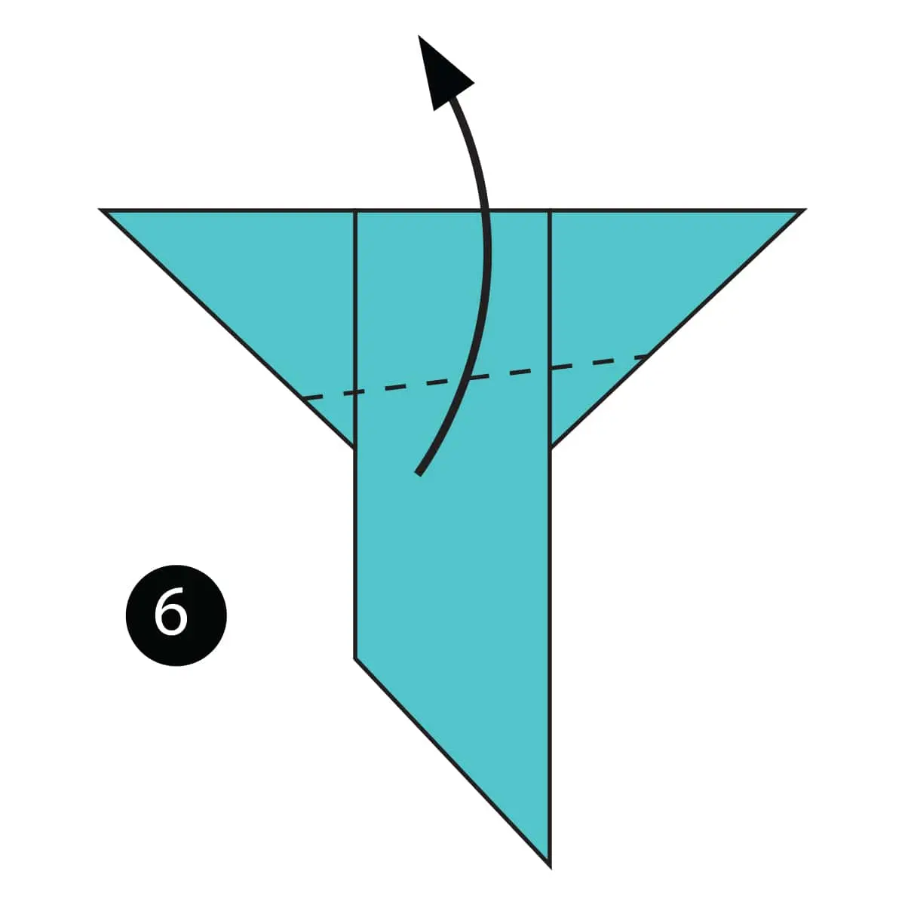
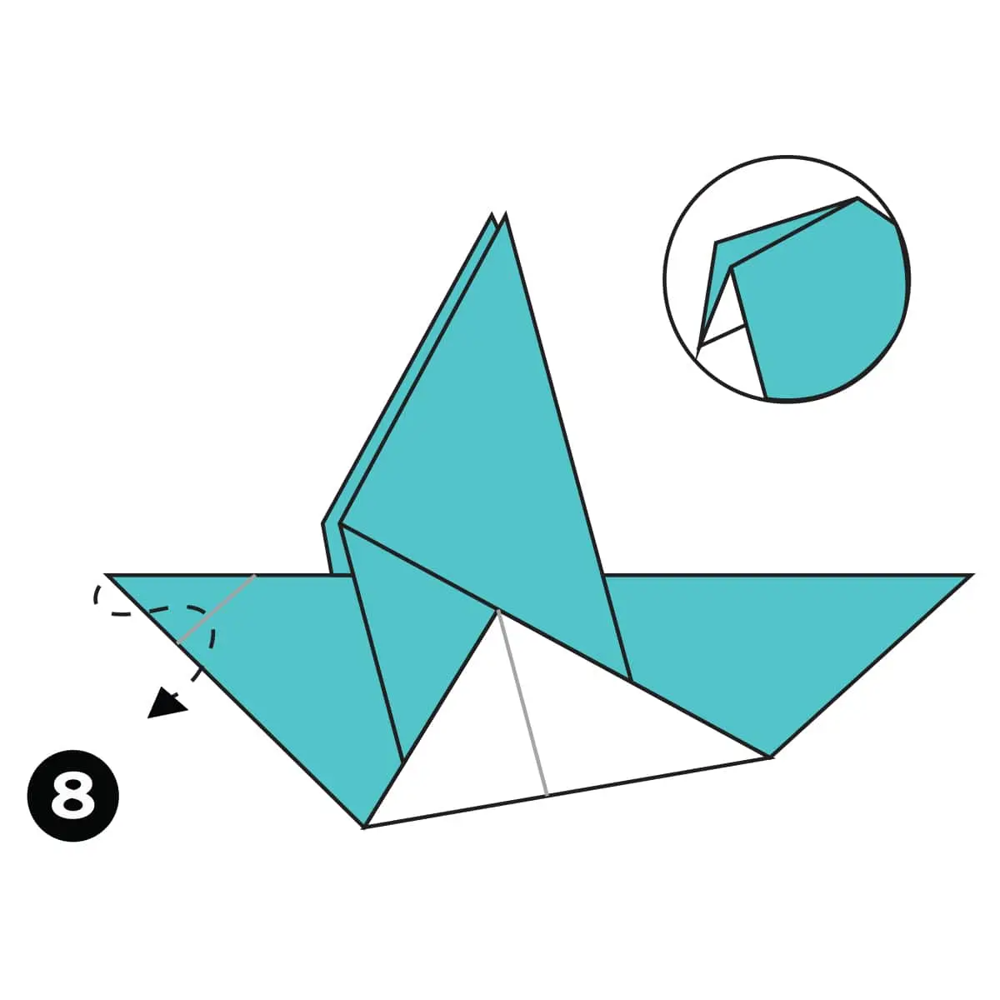

1)Fold the paper in half then unfold it
2)Fold the paper in half the other way
3)Fold both layers of paper to the right aong the dotted line
4)Fold the top layer of the paper to the left along the dotted line
5)Fold the model in half down along the dotted line
6)Fold the top flap of the paper up along the dotted line

7)Fold the paper along the dotted line and then unfold it
8)Make an inside reverse fold using the crease from the previous step

The Finished Pigeon